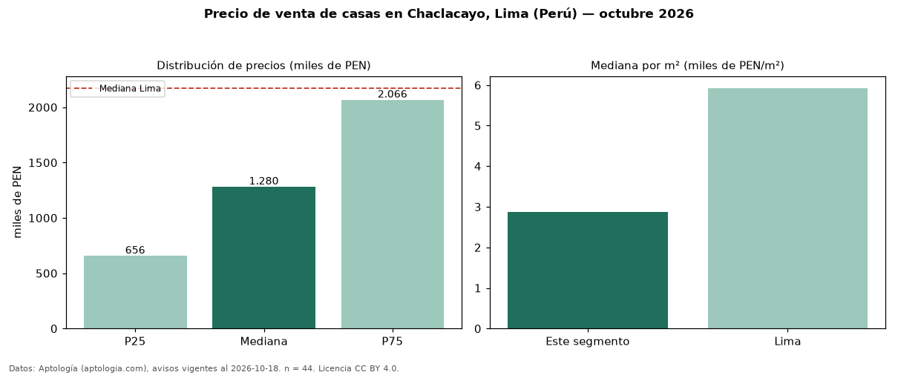

Precio de venta de casas en Chaclacayo, Lima (Perú) — octubre 2026
Con 44 avisos vigentes, el precio mediano de casas en venta en Chaclacayo, Lima (Perú) es PEN 1,28 millones. Frente a la mediana de Lima para casas (PEN 2,17 millones), queda 41 % por debajo. Por metro cuadrado, la mediana es PEN 2.879/m² (n = 37 avisos con área), 51 % por debajo de Lima (PEN 5.926/m²). La mitad central de los avisos va de PEN 655.787 a PEN 2,07 millones (razón 3,1), una dispersión alta. El área mediana anunciada es 334 m². El segmento con más oferta es el de 3 o más habitaciones (39 avisos, mediana PEN 1,30 millones). Por precio mediano es el puesto 9 de 14 distritos de Lima con al menos 30 avisos de casas en venta (PEN): en la franja media. Datos: Aptología (aptologia.com), CC BY 4.0 — https://www.aptologia.com/pe/venta/lima. Archivos: PDF, CSV con las cifras y gráfica PNG.

| Avisos únicos | 44 |
|---|---|
| Percentil 25 | COP 655.787 |
| Mediana | COP 1.280.500 |
| Percentil 75 | COP 2.065.680 |
| Mediana por m² | COP 2.878 |
Fuente: avisos vigentes de portales inmobiliarios recopilados por Aptología, deduplicados (mínimo 30 avisos únicos por celda). Precios pedidos, no cerrados. Fecha: 2026-10-18.